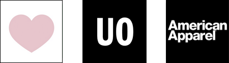
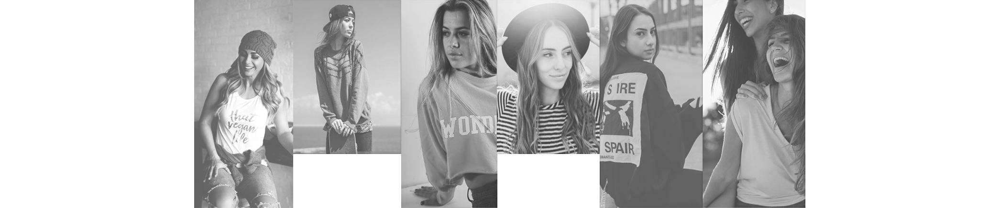

UX/UI Design, Branding
Lotus & Rine is an apparel company that, some would say, falls into a ‘niche’ market, with many competitors making similar and easily duplicated apparel. Companies of such struggle to differentiate themselves and therefore fail to achieve desired purchase rates and loyal customers.
With extensive user research, competitive analysis and user testing, I designed Lotus & Rine with intuitive navigation that stimulates product awareness, easy purchasing, and customer support. In junction, graphic branding was utilized to establish fierce, happy and empowering energy that sets Lotus & Rine apart from its competitors.
Lotus & Rine was developed based off of synthesized results from user research, competitive analysis, user personas, user stories/flows, wireframes, mockups, branding, prototypes and user testing – all with various iterations.
Respondents get nervous about online shopping; fearing products wont look or fit as displayed online (62.3%).
Respondents are (82.6%) more likely to purchase an item that show positive reviews over no reviews at all.
Respondents gravitate towards websites that are "trendy". "Trendy"? Respondents main answer: Things that have a specific identity that exudes or influences confidence.
Shoppers admit they will spend more money on a website once their billing information is saved.
With an analysis of market competitors Brandy Melville, Urban Outfitters and American Apparel, I found that Lotus & Rine’s experience should embody the clean, simple interface and features of Urban Outfitters combined with the intuitive branding incorporated with Brandy Melville. It was made clear that creating a sense of lifestyle within the brand is a very effective way to gain positive attention. This analysis helps us make sure Lotus & Rine performs all desired tasks of other competitors while setting itself apart with branding and very clear product detail. Unnecessary attributes will definitely be left out to ensure the most intuitive experience.
Three users were interviewed about their experience shopping online, discussing what encourages them to shop on a specific website, what discourages them from shopping online, and what keeps them coming back. Alexis Framington (age 28 from Chicago, IL) likes stumbling upon sites she doesn’t know about so she can be stylish knowing others won’t have the same clothes. However, she needs to see the company is well organized and she can definitely get her money back in case she doesn’t like items once they’re received. Emily Nickel (age 22 from Boulder, CO) needs to see a website has personality before she will even consider browsing through their clothes. Emily Miller (age 25 living in San Francisco, CA) needs products to stay consistent over time. If she likes the fit of something, she will go back for more of the same style as long is it’s clear that the styles are in fact the same.
Paths for browsing items, inspecting reviews, leaving reviews, viewing product details, purchasing products and more were detailed for new and returning shoppers. This information architecture served as a template for the creation of the site.
In order to establish the look and feel of Lotus and Rine's brand, preference tests were conducted in the choosing of the logo, fonts, images, and use of language, which was crafted to be fierce, compelling, and friendly.
Roboto was chosen for its versatility as it has a mechanical skeleton but features friendly and open curves. Rift is a tall, geometric type which establishes a versatile playful vibe that still retains earnestness. Avenir is used for it's neutral type that is easy to read. Avenir also retains a certain human stylistic statement which creates a younger, more modern feel. Lucida Grande was utilized in only a few instances to specify call to actions next to Avenir type to establish hierarchy in a subtle way.
Through anlysis, it became clear that Lotus & Rine needed to establish a sense of lifestyle behind its products. Going along with the strong, yet playful vibe that influenced the creation of Lotus & Rine; we chose various backdrops of city streets in junction with a variety of happy, healthy, energetic woman to represent our clothing. Bright white, cool black, and coral was chosen to represent Lotus & Rine. The Black is a testament to daringness and strength, the white establishes a clean, and vivid backdrop for all images and website features, and the coral is in place to draw the eye and add a feminine flair.
Low-fidelity wireframes were created, tested and experienced many different iterations before graduating to the the high-fidelity stage. The first round of testing took place on Peek, where random users were asked to complete a specific set of tasks. A usability test script was then developed and three users completed video usability tests on a clickable prototype. Because of testing, a more intuitive way for users to add items to their cart was implimented by showing users where they can checkout without forcing them to view their cart every time a user adds an item. One of the biggest, most influential discoveries during this process was learning just how much users hate to be pulled away from pages to complete other tasks. The navigation of this site is heavily designed to prevent users from ever having to deviate from their current page to accomplish more tasks.
After receiving positive test results, based around the architecture of the site, the high-fidelity mockups were created. The first step was applying color and images to the layout. Lifestyle expressive images were used for the background. Next, we built a clickable prototype on inVision that was used for multiple user testing experiments including UserTesting videos, five-second tests, nav tests and preference tests. One more change was made during the final stages; allowing users to sign up and save their payment and shipping information after checking out. With this method, the user simply has to click “create account” and the information they already inputed will be saved. The results from the final nav test showed a 100% success rate and happy reviews.
After thorough testing and many design iterations, Lotus & Rine finally captures an intuitive, expressive, user friendly experience, which allows users to shop with confidence and ease.
User testing feedback was a crucial part that helped inform the user experience and design of Lotus & Rine such as the change in the initial “add to cart” process and drop down feature.
More importantly, the design was validated by positive user responses. Users used words like “effortless,” “beautiful,” “clean”, and “sassy” during the testing process.